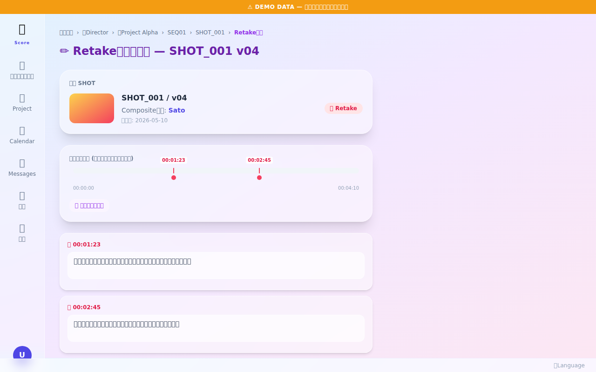

📸 画面

✨ 主な機能
- /director_retake_input (Director 発令 page)
- ・フレームプレビュー = 実 video player (mp4 自動再生・playhead ↔ video.currentTime 双方向 sync)
- ・オーバーペイント canvas (drag 描画・色切替・マーカー保存 + 復元)
- ・タイムライン scrubber (click/drag で playhead 移動)
- ・参考素材添付 (image/video file 選択 + drag&drop + URL)
- ・期日 default = 今日
- ・プレビュー block 動的更新 (input 即時反映)
- ・🚀 リテイクを発行 → /api/bff/retakes (multipart) → SHOT thread に「🔁 Retake 発令」 投稿
- /retake_view/{shot_id}/{task_id} (受信 view-only page)
- ・対象 asset 再生 (TC overlay リアルタイム + マーカー TC click でシーク + 自動 play)
- ・メタ (優先度 / 期日 / 発令者名 / 発令日時)
- ・全体方針 (Director 入力 direction 全文)
- ・コメント card click → video seek + play
- ・参考素材 inline 表示 (画像拡大 / 動画 player / URL link)
- ・💬 task thread を見る link (messages 連動)
🛠 操作方法
- Director: qc_viewer → 🔁 Retake link → /director_retake_input?shot_id&task_id&as_role=director
- 全体方針 textarea 入力 + 参考素材 添付 (drag&drop or click) + 優先度 + 期日
- video player でマーカー保存 + コメント記入 → プレビュー block 即時反映
- 🚀 リテイクを発行 → 「✅ 発行完了 — thread / push / sse」 表示
- Compositor (受信側): 通知 toast → SHOT thread → ▶ ボタン → /retake_view/{shot_id}/{task_id}
- video + マーカー button + コメント card で全内容確認 → 修正作業へ